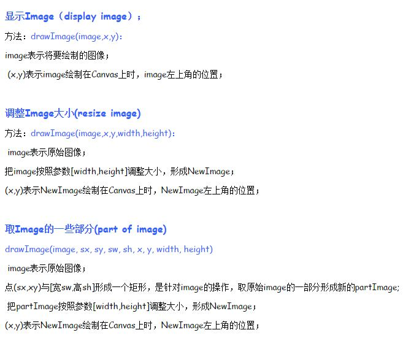

图片加载
为了实现运行时加载一张图片，可以创建一个images对象，并将其src属性设置为图片的url路径，当图片加载完成后，就会执行onload（）方法
images = new Image();images.src="d1.jpg";images.onload = function(){context.drawImage(images,0,0);}
使用dom访问html文件中的一个图片元素，该方法的优点在于在脚本执行时图片已经完全加载完成，采用该方法，记得先隐藏头元素，不然会加载两次，
参数图解 
像素处理
ImageData你可以理解为“含像素数据的图形对象”，“像素数据”指的是该图形对象上的每一个有序的像素的数据，每个像素都有它对应的颜色数据（RGBA值）。
我们可以通过 createImageData(width,height)
方法来创建一个ImageData对象，然后通过 putImageData(imgData,x,y) 方法把ImageData对象放到画布上：
var imgData=ctx.createImageData(200,100);ctx.putImageData(imgData,50,60);
运行上述代码，不会有任何图形显示出来，因为我们仅仅创建了一个没有任何数据的ImageData对象。如何给ImageData对象赋予像素数据、定义其每一点像素的颜色呢？处理这问题要用到ImageData对象的 .data 属性。
<我们要知道，一个图形对象上的每一点像素都是从上到下一行一行（每一行里又是从左到右）有序地排列着的br>，而每一个像素又有四个数值（RGBA）表示它的颜色。
比如下方有一个非常简单的图形对象
（假设我把它放大了75倍，方便查看），它一共只有四个像素点，这四个像素点的RGBA数值分别是(255,255,0,255)、(0,255,64,255)、(43,149,255,255)、(236,103,100,51) ：

那么这个图形对象的“像素数据”可以看为一个数组： [255,255,0,255,0,255,64,255,43,149,255,255,236,103,100,51]
<也就是把四个像素的RGBA数据依次拼起来。当然这里只是一个非常简单的例子，常规的图像可能有几千几万个像素
也就是把四个像素的RGBA数据依次拼起来。当然这里只是一个非常简单的例子，常规的图像可能有几千几万个像素br>，但它们的像素数据都遵循这种存储方式。
<而ImageData对象的
而ImageData对象的br> .data 属性正是返回这么一个存储像素数据的数组（没错就是数组，故有length属性）。我们可以这样进一步完善上方的代码：
其实 putImageData() 方法还有四个可选参数，可以用来裁剪ImageData对象上的指定区域。其全部参数为：
ctx.putImageData( imgData, x, y, clip_X, clip_Y, clip_Width, clip_Height);
clip_X,clip_Y分别表示相对于ImageData对象的裁剪起始点坐标，clip_Width, clip_Height表示要裁剪的矩形区域宽高。例如上面的例子我们可以稍微裁剪一下，裁剪成正方形吧：
另外介绍下获取已有ImageData对象的两个方式，首先是直接用 createImageData( imgData ) 的方式来获取已有的ImageData对象的尺寸，注意这里只会获取其尺寸，不会把已有对象的像素数据也复制了：
另一种方法才算是地道的获取、复制已有ImageData对象的方法，即 getImageData() 方法，该方法返回一个 ImageData 对象，此对象拷贝了画布指定矩形区域的像素数据，其语法如下：
var newImgData=ctx.getImageData( x, y, width, height );